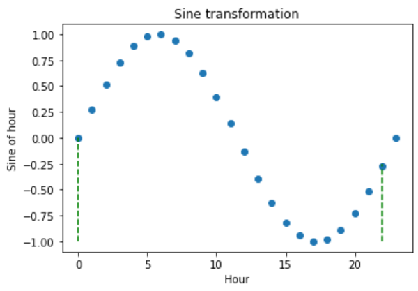
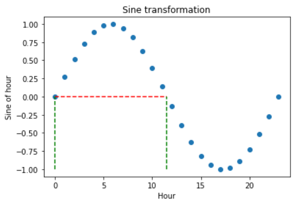
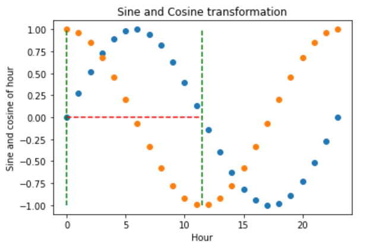
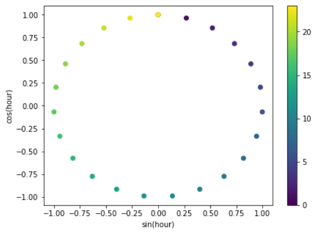

CyclicalFeatures#
Some features are inherently cyclical. Clear examples are time features, i.e., those features derived from datetime variables like the hours of the day, the days of the week, or the months of the year.
But that’s not the end of it. Many variables related to natural processes are also cyclical, like, for example, tides, moon cycles, or solar energy generation (which coincides with light periods, which are cyclical).
In cyclical features, higher values of the variable are closer to lower values. For example, December (12) is closer to January (1) than to June (6).
How can we convey to machine learning models like linear regression the cyclical nature of the features?
In the article “Advanced machine learning techniques for building performance simulation,” the authors engineered cyclical variables by representing them as (x,y) coordinates on a circle. The idea was that, after preprocessing the cyclical data, the lowest value of every cyclical feature would appear right next to the largest value.
To represent cyclical features in (x, y) coordinates, the authors created two new features, deriving the sine and cosine components of the cyclical variable. We call this procedure “cyclical encoding.”
Cyclical encoding#
The trigonometric functions sine and cosine are periodic and repeat their values every 2 pi radians. Thus, to transform cyclical variables into (x, y) coordinates using these functions, first we need to normalize them to 2 pi radians.
We achieve this by dividing the variables’ values by their maximum value. Thus, the two new features are derived as follows:
var_sin = sin(variable * (2. * pi / max_value))
var_cos = cos(variable * (2. * pi / max_value))
In Python, we can encode cyclical features by using the Numpy functions sin and cos:
import numpy as np
X[f"{variable}_sin"] = np.sin(X["variable"] * (2.0 * np.pi / X["variable"]).max())
X[f"{variable}_cos"] = np.cos(X["variable"] * (2.0 * np.pi / X["variable"]).max())
We can also use Feature-engine to automate this process.
Cyclical encoding with Feature-engine#
CyclicalFeatures() creates two new features from numerical variables to better
capture the cyclical nature of the original variable. CyclicalFeatures() returns
two new features per variable, according to:
var_sin = sin(variable * (2. * pi / max_value))
var_cos = cos(variable * (2. * pi / max_value))
where max_value is the maximum value in the variable, and pi is 3.14…
Finding the max_value#
CyclicalFeatures() attempts to automate the process of cyclical encoding by
automatically determining the value used to normalize the feature between
0 and 2 * pi radians, which coincides with the cycle of the periodic functions sine and
cosine.
Hence, the values of the variable matter. For example, if the variable hour shows values
ranging between 0 and 23, it will create the new features by dividing by 23. If instead,
the variable varies between 1 and 24, it will create the new features by dividing by 24.
If you want to use a specific period to rescale your variables, you can pass a dictionary containing the variable names as keys, and the values for the scaling as values. In this way, you can apply cyclical encoding while dividing by 24 to a variable that shows values between 0 and 23.
Applying cyclical encoding#
We’ll start by applying cyclical encoding to a toy dataset to get familiar with how to use Feature-engine for cyclical encoding.
In this example, we’ll encode the cyclical features days of the week and months. Let’s create a toy dataframe with the variables “days” and “months”:
import pandas as pd
from feature_engine.creation import CyclicalFeatures
df = pd.DataFrame({
'day': [6, 7, 5, 3, 1, 2, 4],
'months': [3, 7, 9, 12, 4, 6, 12],
})
In the following output we see the toy dataframe:
day months
0 6 3
1 7 7
2 5 9
3 3 12
4 1 4
5 2 6
6 4 12
Now we set up CyclicalFeatures() to find the maximum value of each variable
automatically:
cyclical = CyclicalFeatures(variables=None, drop_original=False)
X = cyclical.fit_transform(df)
The maximum values used for the transformation are stored in the attribute
max_values_:
cyclical.max_values_
{'day': 7, 'months': 12}
Let’s have a look at the transformed dataframe:
print(X.head())
We see that the new variables were added at the right of our dataframe.
day months day_sin day_cos months_sin months_cos
0 6 3 -7.818315e-01 0.623490 1.000000e+00 6.123234e-17
1 7 7 -2.449294e-16 1.000000 -5.000000e-01 -8.660254e-01
2 5 9 -9.749279e-01 -0.222521 -1.000000e+00 -1.836970e-16
3 3 12 4.338837e-01 -0.900969 -2.449294e-16 1.000000e+00
4 1 4 7.818315e-01 0.623490 8.660254e-01 -5.000000e-01
Dropping variables after encoding#
In the previous section, we set the parameter drop_original to False, which means that
we keep the original variables after the cyclical encoding. If we want them dropped after
the feature creation, we can set the parameter to True:
cyclical = CyclicalFeatures(variables=None, drop_original=True)
X = cyclical.fit_transform(df)
print(X.head())
The resulting dataframe contains only the cyclical encoded features; the original variables are removed:
day_sin day_cos months_sin months_cos
0 -7.818315e-01 0.623490 1.000000e+00 6.123234e-17
1 -2.449294e-16 1.000000 -5.000000e-01 -8.660254e-01
2 -9.749279e-01 -0.222521 -1.000000e+00 -1.836970e-16
3 4.338837e-01 -0.900969 -2.449294e-16 1.000000e+00
4 7.818315e-01 0.623490 8.660254e-01 -5.000000e-01
We can now use the new features, which convey the cyclical nature of the data, to train machine learning algorithms, like linear or logistic regression.
Obtaining the name of the resulting features#
We can obtain the names of the variables in the transformed dataset as follows:
cyclical.get_feature_names_out()
This returns the name of all the variables in the final output:
['day_sin', 'day_cos', 'months_sin', 'months_cos']
Understanding cyclical encoding#
We now know how to convert cyclical variables into (x, y) coordinates of a circle by using the sine and cosine functions. Let’s now carry out some visualizations to better understand the effect of this transformation.
Let’s create a toy dataframe:
import pandas as pd
import matplotlib.pyplot as plt
df = pd.DataFrame([i for i in range(24)], columns=['hour'])
If we execute print(df), we’ll see the resulting dataframe:
hour
0 0
1 1
2 2
3 3
4 4
5 5
6 6
7 7
8 8
9 9
10 10
11 11
12 12
13 13
14 14
15 15
16 16
17 17
18 18
19 19
20 20
21 21
22 22
23 23
Let’s now compute the sine and cosine features, and then display the resulting dataframe:
cyclical = CyclicalFeatures(variables=None)
df = cyclical.fit_transform(df)
print(df.head())
These are the sine and cosine features that represent the hour:
hour hour_sin hour_cos
0 0 0.000000 1.000000
1 1 0.269797 0.962917
2 2 0.519584 0.854419
3 3 0.730836 0.682553
4 4 0.887885 0.460065
Let’s now plot the hour variable against its sine transformation. We add perpendicular lines to flag the hours 0 and 22.
plt.scatter(df["hour"], df["hour_sin"])
# Axis labels
plt.ylabel('Sine of hour')
plt.xlabel('Hour')
plt.title('Sine transformation')
plt.vlines(x=0, ymin=-1, ymax=0, color='g', linestyles='dashed')
plt.vlines(x=22, ymin=-1, ymax=-0.25, color='g', linestyles='dashed')
After the transformation using the sine function, we see that the new values for the hours 0 and 22 are closer to each other (follow the dashed lines), which is what we intended:
The problem with trigonometric transformations, is that, because they are periodic, 2 different observations can also return similar values after the transformation. Let’s explore that:
plt.scatter(df["hour"], df["hour_sin"])
# Axis labels
plt.ylabel('Sine of hour')
plt.xlabel('Hour')
plt.title('Sine transformation')
plt.hlines(y=0, xmin=0, xmax=11.5, color='r', linestyles='dashed')
plt.vlines(x=0, ymin=-1, ymax=0, color='g', linestyles='dashed')
plt.vlines(x=11.5, ymin=-1, ymax=0, color='g', linestyles='dashed')
In the plot below, we see that the hours 0 and 11.5 obtain very similar values after the sine transformation, but they are not close to each other. So how can we differentiate them?
To fully encode the information of the hour, we must use the sine and cosine trigonometric transformations together. Adding the cosine function, which is out of phase respect to the sine function, breaks the symmetry and assigns a unique codification to each hour.
Let’s explore that:
plt.scatter(df["hour"], df["hour_sin"])
plt.scatter(df["hour"], df["hour_cos"])
# Axis labels
plt.ylabel('Sine and cosine of hour')
plt.xlabel('Hour')
plt.title('Sine and Cosine transformation')
plt.hlines(y=0, xmin=0, xmax=11.5, color='r', linestyles='dashed')
plt.vlines(x=0, ymin=-1, ymax=1, color='g', linestyles='dashed')
plt.vlines(x=11.5, ymin=-1, ymax=1, color='g', linestyles='dashed')
The hour 0, after the transformation, takes the values of sine 0 and cosine 1, which makes it different from the hour 11.5, which takes the values of sine 0 and cosine -1. In other words, with the two functions together, we are able to distinguish all observations within our original variable.
Finally, let’s vizualise the (x, y) circle coordinates generated by the sine and cosine features.
fig, ax = plt.subplots(figsize=(7, 5))
sp = ax.scatter(df["hour_sin"], df["hour_cos"], c=df["hour"])
ax.set(
xlabel="sin(hour)",
ylabel="cos(hour)",
)
_ = fig.colorbar(sp)
The following plot conveys the intended effect resulting from applying cyclical encoding to periodic features.
That’s it, you now know how to represent cyclical data through the use of trigonometric functions and cyclical encoding.
Feature-engine vs Scikit-learn#
Let’s compare the implementations of cyclical encoding between Feature-engine and Scikit-learn. We’ll work with the Bike sharing demand dataset, and we’ll follow the implementation of Cyclical encoding found in the Time related features documentation from Scikit-learn.
Let’s load the libraries and dataset:
import numpy as np
import pandas as pd
from sklearn.compose import ColumnTransformer
from sklearn.datasets import fetch_openml
from sklearn.preprocessing import FunctionTransformer
from feature_engine.creation import CyclicalFeatures
df = fetch_openml("Bike_Sharing_Demand", version=2, as_frame=True).frame
print(df.head())
In the following output we see the bike sharing dataset:
season year month hour holiday weekday workingday weather temp \
0 spring 0 1 0 False 6 False clear 9.84
1 spring 0 1 1 False 6 False clear 9.02
2 spring 0 1 2 False 6 False clear 9.02
3 spring 0 1 3 False 6 False clear 9.84
4 spring 0 1 4 False 6 False clear 9.84
feel_temp humidity windspeed count
0 14.395 0.81 0.0 16
1 13.635 0.80 0.0 40
2 13.635 0.80 0.0 32
3 14.395 0.75 0.0 13
4 14.395 0.75 0.0 1
To apply cyclical encoding with Scikit-learn, we can use the FunctionTransformer:
def sin_transformer(period):
return FunctionTransformer(lambda x: np.sin(x / period * 2 * np.pi))
def cos_transformer(period):
return FunctionTransformer(lambda x: np.cos(x / period * 2 * np.pi))
To apply this transformation to multiple variables with different maximum values, we
can combine the transformers within an instance of the ColumnTransformer:
cyclic_cossin_transformer = ColumnTransformer(
transformers=[
("month_sin", sin_transformer(12), ["month"]),
("month_cos", cos_transformer(12), ["month"]),
("weekday_sin", sin_transformer(7), ["weekday"]),
("weekday_cos", cos_transformer(7), ["weekday"]),
("hour_sin", sin_transformer(24), ["hour"]),
("hour_cos", cos_transformer(24), ["hour"]),
],
).set_output(transform="pandas")
Now we can obtain the cyclical encoded features:
Xt = cyclic_cossin_transformer.fit_transform(df)
print(Xt)
In the following output we see the sine and cosine features of the variables month, weekday and hour:
month_sin__month month_cos__month weekday_sin__weekday \
0 5.000000e-01 0.866025 -0.781831
1 5.000000e-01 0.866025 -0.781831
2 5.000000e-01 0.866025 -0.781831
3 5.000000e-01 0.866025 -0.781831
4 5.000000e-01 0.866025 -0.781831
... ... ... ...
17374 -2.449294e-16 1.000000 0.781831
17375 -2.449294e-16 1.000000 0.781831
17376 -2.449294e-16 1.000000 0.781831
17377 -2.449294e-16 1.000000 0.781831
17378 -2.449294e-16 1.000000 0.781831
weekday_cos__weekday hour_sin__hour hour_cos__hour
0 0.62349 0.000000 1.000000
1 0.62349 0.258819 0.965926
2 0.62349 0.500000 0.866025
3 0.62349 0.707107 0.707107
4 0.62349 0.866025 0.500000
... ... ... ...
17374 0.62349 -0.965926 0.258819
17375 0.62349 -0.866025 0.500000
17376 0.62349 -0.707107 0.707107
17377 0.62349 -0.500000 0.866025
17378 0.62349 -0.258819 0.965926
[17379 rows x 6 columns]
With Feature-engine, we can do the same as follows:
tr = CyclicalFeatures(drop_original=True)
Xt = tr.fit_transform(df[["month", "weekday", "hour"]])
print(Xt)
Note that with less lines of code we obtained a similar result:
month_sin month_cos weekday_sin weekday_cos hour_sin \
0 5.000000e-01 0.866025 -2.449294e-16 1.0 0.000000e+00
1 5.000000e-01 0.866025 -2.449294e-16 1.0 2.697968e-01
2 5.000000e-01 0.866025 -2.449294e-16 1.0 5.195840e-01
3 5.000000e-01 0.866025 -2.449294e-16 1.0 7.308360e-01
4 5.000000e-01 0.866025 -2.449294e-16 1.0 8.878852e-01
... ... ... ... ... ...
17374 -2.449294e-16 1.000000 8.660254e-01 0.5 -8.878852e-01
17375 -2.449294e-16 1.000000 8.660254e-01 0.5 -7.308360e-01
17376 -2.449294e-16 1.000000 8.660254e-01 0.5 -5.195840e-01
17377 -2.449294e-16 1.000000 8.660254e-01 0.5 -2.697968e-01
17378 -2.449294e-16 1.000000 8.660254e-01 0.5 -2.449294e-16
hour_cos
0 1.000000
1 0.962917
2 0.854419
3 0.682553
4 0.460065
... ...
17374 0.460065
17375 0.682553
17376 0.854419
17377 0.962917
17378 1.000000
[17379 rows x 6 columns]
Note, however, that the dataframes are not identical, because by default, CyclicalFeatures()
divides the variables by their maximum values:
tr.max_values_
With the default implementation, we divided the variable weekday by 6, instead of 7, and the variable hour by 23, instead of 24, because the values of these variables vary between 0 and 6, and 0 and 23, respectively.
{'month': 12, 'weekday': 6, 'hour': 23}
Practically, there isn’t a big difference between the values of the dataframes returned by Scikit-learn and Feature-engine, and I doubt that this subtle difference will incur in a big change in model performance.
However, if you want to divide the varibles weekday and hour by 7 and 24 respectively, you can do so like this:
tr = CyclicalFeatures(
max_values={"month": 12, "weekday": 7, "hour": 24},
drop_original=True,
)
Xt = tr.fit_transform(df[["month", "weekday", "hour"]])
print(Xt)
And now, the values of the dataframes are identical:
month_sin month_cos weekday_sin weekday_cos hour_sin hour_cos
0 5.000000e-01 0.866025 -0.781831 0.62349 0.000000 1.000000
1 5.000000e-01 0.866025 -0.781831 0.62349 0.258819 0.965926
2 5.000000e-01 0.866025 -0.781831 0.62349 0.500000 0.866025
3 5.000000e-01 0.866025 -0.781831 0.62349 0.707107 0.707107
4 5.000000e-01 0.866025 -0.781831 0.62349 0.866025 0.500000
... ... ... ... ... ... ...
17374 -2.449294e-16 1.000000 0.781831 0.62349 -0.965926 0.258819
17375 -2.449294e-16 1.000000 0.781831 0.62349 -0.866025 0.500000
17376 -2.449294e-16 1.000000 0.781831 0.62349 -0.707107 0.707107
17377 -2.449294e-16 1.000000 0.781831 0.62349 -0.500000 0.866025
17378 -2.449294e-16 1.000000 0.781831 0.62349 -0.258819 0.965926
[17379 rows x 6 columns]
Ultimately, choosing the right period for the cyclical encoding is the responsibility of the user, with automation, we can only go that far.
Additional resources#
For tutorials on how to create cyclical features, check out the following courses:

Feature Engineering for Machine Learning#

Feature Engineering for Time Series Forecasting#
For a comparison between one-hot encoding, ordinal encoding, cyclical encoding and spline encoding of cyclical features check out the following sklearn demo.
Check also these Kaggle demo on the use of cyclical encoding with neural networks: